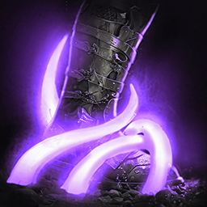
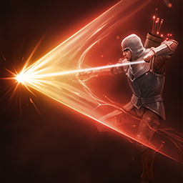
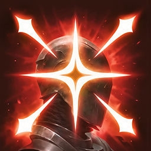
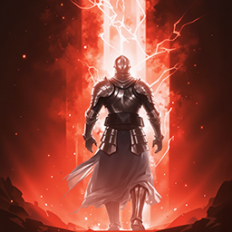
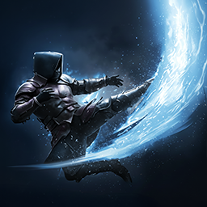

Leveling¶
Intro¶
Dans cette partie, nous allons voir comment gérer notre phase de leveling 1-45 en globalité. Je ne ferai pas d'étapes détaillées par "palier" de niveau.
Pour le leveling, le but est très simple : faire les quêtes principales (jaunes) puis réaliser les quêtes secondaires (vertes) que vous pouvez croiser sur le chemin.
Certaines quêtes vertes sont tout aussi importantes que les quêtes principales, car elles vous octroient :
- des points de Daevanion ;
- des runes PvE ;
- des équipements, notamment des accessoires en début de jeu, que vous n'obtenez que par celles-ci.
Il faut garder à l'esprit que réaliser des quêtes secondaires vous débloque également d'autres quêtes secondaires, vous permettant d'obtenir de nouveaux accessoires plus puissants.
Il est également conseillé de récupérer un maximum de plumes sur votre chemin. Ne vous éloignez cependant pas trop de votre trajectoire de base lorsque vous réalisez vos quêtes principales et secondaires.
Pensez également à réaliser vos donjons scellés et Stronghold.
Note
Une fois votre monolithe level 30, ne vous attardez pas trop à ramasser les autres plumes : ce n'est pas mandatory.
Optimisation du leveling
Pour les personnes souhaitant optimiser ou accélérer un minimum le leveling, je vous suggère de mettre en place une macro d'interaction.
Dans les options du jeu, bindez deux touches d'interaction. Par défaut, il y a déjà la touche F ; ajoutez une seconde touche, éventuellement une touche "morte" que vous n'utilisez pas.
Si vous possédez une souris Logitech ou d'une autre marque permettant de créer des macros, créez ensuite une macro depuis le logiciel de votre souris en y assignant :
- les deux touches d'interaction ;
- le clic gauche de la souris.
Cela diminue énormément le temps passé, au total, dans les dialogues de PNJ.
Skills¶
Leveling des sorts
Cette section concerne uniquement la progression de vos compétences
pendant le leveling 1 à 45.
Je conseillerais également d'acheter des Wisdom Stone (points de skills) dès que possible afin de monter au maximum possible vos sorts par les points (level 10 max avec les points de sorts)
Priorité générale¶
Pendant le leveling, évitez de répartir vos points uniformément entre toutes vos compétences.
L'objectif est de monter en priorité les compétences qui apportent le plus à votre progression, puis d'investir progressivement dans le reste de votre kit.
Compétences actives¶
Pendant le leveling, inutile de chercher à monter toutes vos compétences actives de manière uniforme. Certains paliers sont plus intéressants à atteindre rapidement afin de débloquer les spécialités utiles à votre progression.
Voici les principaux objectifs à viser :
| Compétence | Niveau conseillé |
|---|---|
 Snare Shot |
12 |
| Marking Shot | 8–12 |
 Drill Dart |
À monter progressivement |
| Gale Arrow | 12 |
| Burst Arrow | 12 |
 Deadshot |
12 |
Marking Shot
Marking Shot peut dans un premier temps être conservé au niveau 8. Vous pourrez ensuite le monter au niveau 12 lorsque vous disposerez de suffisamment de points.
Note
Ces niveaux représentent des objectifs pendant le leveling et non le niveau définitif conseillé pour ces compétences une fois niveau maximum.
Compétences passives¶
Pour les compétences passives, la priorité reste globalement la même pendant toute la progression.
Plutôt que de dupliquer les explications ici, vous pouvez retrouver les différents passifs ainsi que leur ordre de priorité dans la section dédiée :
→ Priorité des compétences passives
Stigmas¶
Note
Au fur et à mesure de votre leveling vous allez débloquer des slots de Stigmas, dans cette section on va donc voir la priorisation.
Au début de la version Global on aura maximum 4 slots de stigma et voici ceux à prioriser dans l'ordre :
- Vaizel's Authority

Bow of Blessing- Supporting Fire
Vous serez normalement capable de les monter au moins level 5 pour débloquer la première spécialité, sur chaque, avant de passer au suivant.
Pour le quatrième slot vous pouvez l'adapter selon vos envies et moment (à savoir que vous pouvez réinitialiser à tout moment les niveaux de stigma) :
- Griffon Arrow → choix offensif/DPS.
- Explosive Arrow → DPS, notamment intéressant avec Slow/Root.

Ambush Kick → mobilité/survie/repositionnement.- Mother Nature's Breath → défensif/survie.
Objectif niveau 45¶
Une fois niveau 45, l'objectif est d'avoir progressivement vos principales compétences actives au niveau 16 afin de débloquer leur dernier palier de spécialité.
Pour l'optimisation complète des compétences après le leveling :